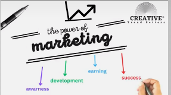
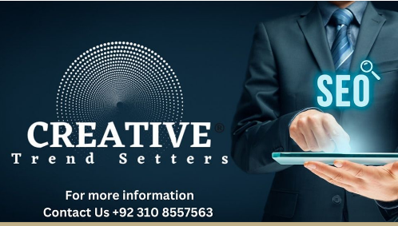

Portfolio



At Digital Marketing, we offer professional website design and development services tailored to meet your business goals. Your website is the digital face of your brand, and we ensure it not only looks stunning but also functions seamlessly, providing a user-friendly experience that keeps visitors engaged.
We believe that your website should reflect your brand’s unique identity. Our team of skilled designers works closely with you to understand your vision and translate it into a visually appealing, intuitive design. Whether you’re looking for a sleek, modern look or something more traditional, we create a custom design that captures your brand’s essence.
With the majority of users accessing websites from mobile devices, having a mobile-friendly site is essential. We build fully responsive websites that look great and function smoothly on all screen sizes—whether on a desktop, tablet, or smartphone. This ensures a consistent user experience, no matter how your audience interacts with your site.
A beautiful website is only effective if it can be found. Our web development process includes SEO optimization to help your site rank higher on search engines. We integrate SEO best practices right from the start, ensuring your website has the visibility it needs to attract organic traffic and drive conversions.
Speed and security are critical for user experience and search rankings. We build websites that are optimized for fast loading times and provide a secure environment for your users. Whether you need e-commerce functionality or a simple business site, we ensure your data and your customers' information are protected.
Our websites are built with your audience in mind. From intuitive navigation to clean layouts, we focus on creating an engaging and user-friendly experience. We prioritize ease of use, making it simple for visitors to find the information they need and take action—whether that’s making a purchase, signing up for a newsletter, or contacting your business.
As your business grows, your website needs to keep up. We build scalable solutions that can adapt to your evolving needs. Whether you’re planning to add more products, services, or features in the future, our websites are designed to grow with your business.
We integrate user-friendly content management systems (CMS) such as WordPress, allowing you to easily update and manage your website content without any technical expertise. This gives you control over your site, ensuring that you can keep it up-to-date with minimal effort.
Our relationship doesn’t end after your website is launched. We offer ongoing support and maintenance services to keep your site running smoothly. From regular updates to troubleshooting issues, we’re here to ensure your website stays optimized and up-to-date as technology evolves.
1. Experienced Team: With Many years of experience, we understand the nuances of effective website design and development.
2. Custom Solutions: Every website we create is uniquely tailored to your business needs.
3. Full-Service Approach: From design to development, SEO to ongoing support, we handle everything so you can focus on growing your business.